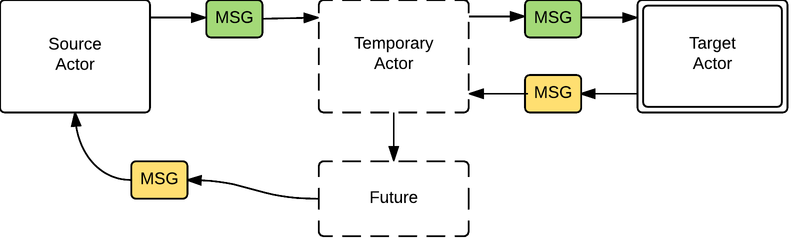
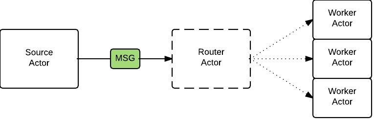

Created by Todd Ginsberg for CJUG
So come say hi after this!
“Akka is a toolkit and runtime for building highly concurrent, distributed, and resilient message-driven applications on the JVM.”
...and it does this with the Actor Concurrency model.
Actor:
class CounterActor extends Actor with ActorLogging {
var counter = 0
def receive = {
case Increment =>
counter += 1
sender ! CounterState(counter)
case Decrement =>
counter -= 1
sender ! CounterState(counter)
}
}
Sending a Message:
val actor = system.actorOf(CounterActor.props, "myCounter")
actor ! Increment
Let it crash!
override val supervisorStrategy =
OneForOneStrategy(maxNrOfRetries = 10, withinTimeRange = 1 minute) {
case _: ArithmeticException => Resume
case _: NullPointerException => Restart
case _: IllegalArgumentException => Stop
case _: Exception => Escalate
}
Used when you want to wait for the answer

val futureAnswer = actor ? Increment
val result = Await.result(futureAnswer, 10 seconds)
println(result)
Many different strategies supported.
Or write your own!
Visit http://akka.io for very comprehensive documentation and examples.
Thanks!